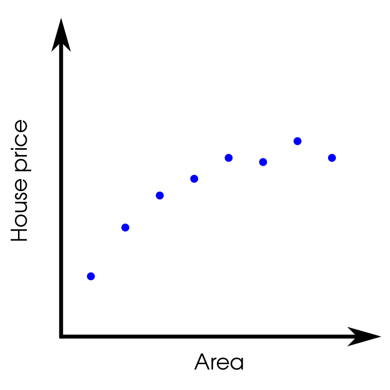
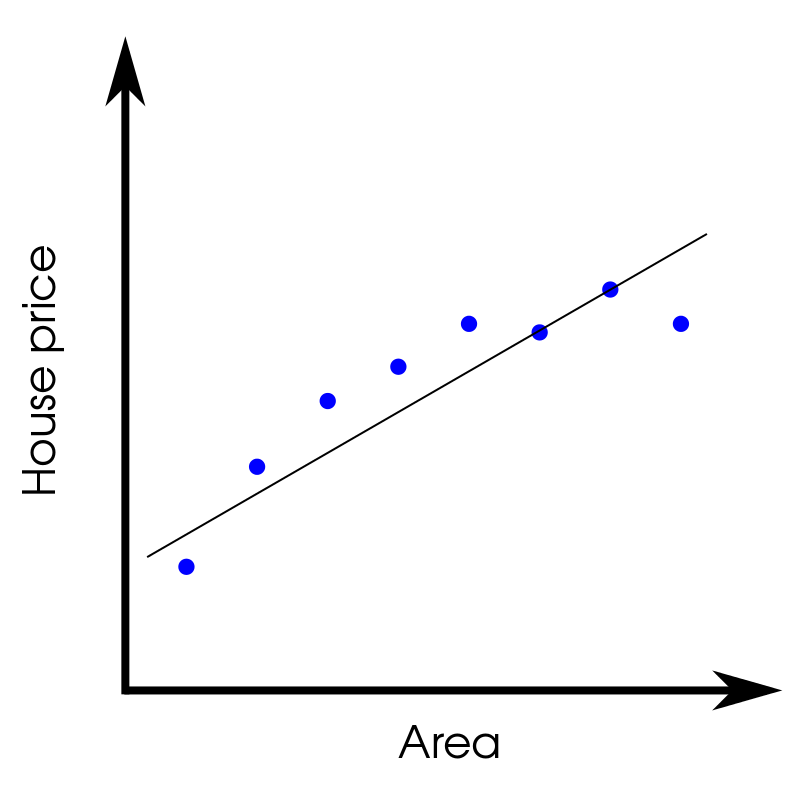
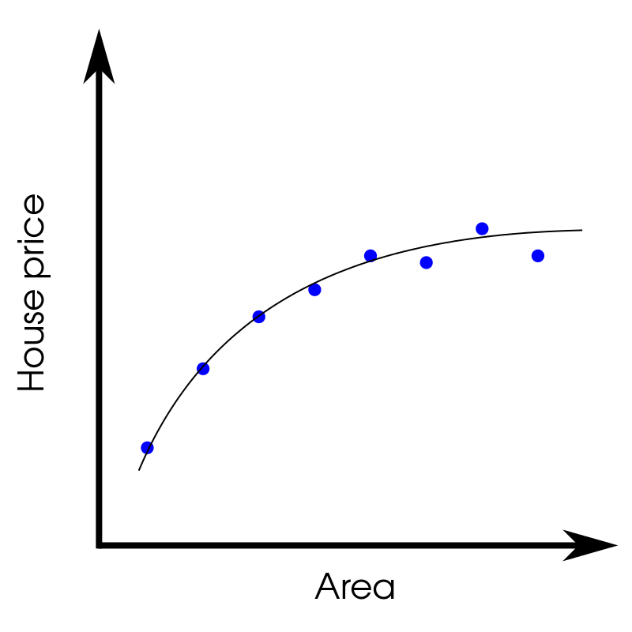
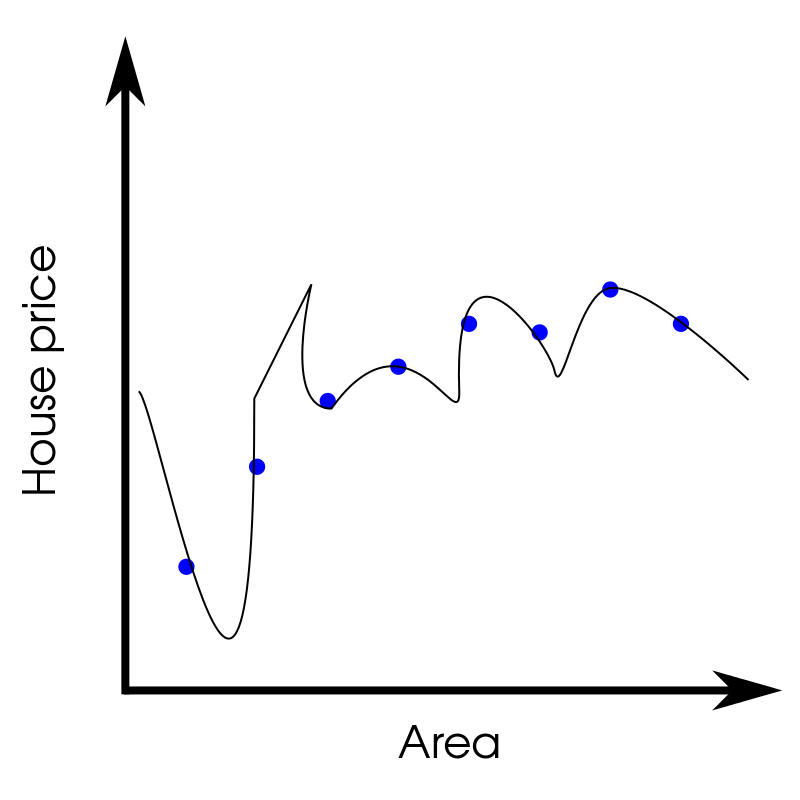
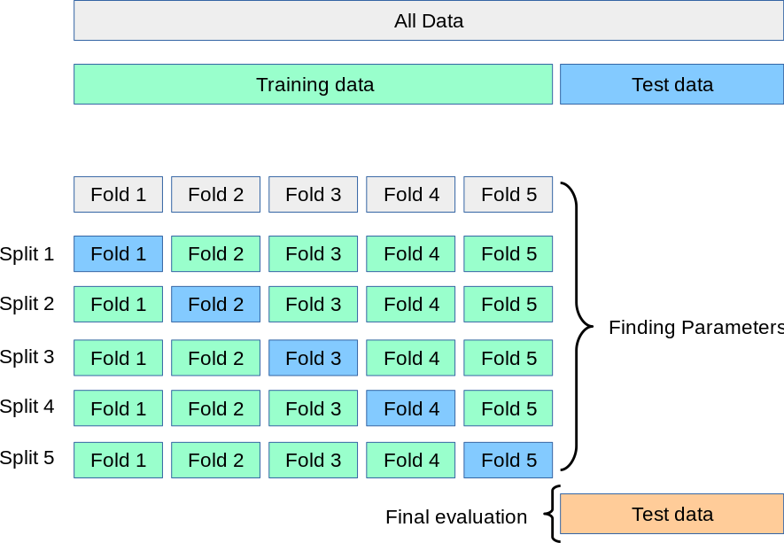

11 K is for K-fold Cross-validation
In supervised learning problems we have data as well as a label (something we need to predict) for each data point. We typically refer to the combination of data + labels as training data. You might remember from Chapter 6 that there are two broad categories of supervised learning problems: classification and regression. In classification, we are trying to predict which class (or category) the input data belongs to. For example, this might be trying to predict if an email is spam or not spam. There are typically a small number of categories to choose from (e.g. spam/not spam). In regression problems, we are trying to predict a continuous variable (i.e. a number) such as the selling price of a house based on some features (e.g. square footage). Here we are not trying to pick from a small group of categories, but to get close to the actual number (where there can be infinitely possible values).
In all supervised learning problems we want to know well our model is doing and how well it can predict things for unseen data.
How does our model fit the data?
Lets focus on regression and take a further look at the housing example. For now assume we have a training set and some way to model our data. How do we know if our model is any good? Let’s take a look at our imaginary training data

As you can imagine, as the square footage of a house increases the price goes up. If our model tries to fit this data with a straight line then we get something like this

This line is an okay fit to the data but doesn’t really give accurate predictions. We say that this model underfits the data or has high bias. What we really want is a function that is much closer to all the points

This is a pretty good fit to the data and seems to do what one would intuitively expect. The function doesn’t pass through every point but it’s pretty close to most of them. Our model could probably find some function that passes through every point

While this function passes through every point it won’t work well on new data. We say that this model overfits the data or has high variance. This means that the model has two many parameters or there are not enough features in the training set. In this case it would probably be beneficial to add more features to the training set. For example, there is a huge difference in price between a 1000 square foot house in San Francisco versus Thunder Bay. So adding the location of the house might improve the model. In the case of the model that underfit the data, adding more features won’t help. We need to add more parameters to the model so that there is more room to try and fit the data.
Testing our model
So how do we tell if our model is any good? Typically, the training data is broken into 2 parts. There is a training set (about 70% of the data) and a test set (the remaining 30%). Splitting the data into training/test sets is known as cross-validation. As the name implies the parameters of the model are trained using the training set. The model is then fed in the data from the test set and the error is calculated. Using the error associated with both the training and the test sets you can diagnose if your model underfits, overfits, or is a good fit to the data.
In addition to using a train/test split, people will often use a third split: the validation set (sometimes called a development set). Let’s break down what each of those sets are used for:
- Training set: As you would expect, this is the data used to actually train the model. As you might recall from Chapter 7, training a model just means learning which feature weights give you the best predictions (i.e. match your labels as closely as possible).
- Validation set: This is used for learning the best set of hyperparameters. Hyperparameters are knobs you can turn for the model itself (e.g. learning rate or mini-batch size). In the training set where we are trying to answer “how can I weight these features to get the best predictions?”. In the validation set we are trying to answer “how can I adjust the model itself to give the best predictions when training?”
- Test set: We want to test our model on data that it has not seen in order to see if it is overfitting/underfitting. We never update the model (or hyperparameters) on the test set and we just make predictions on it using the trained model.
K-fold cross-validation
If you split your data into training/validation/test sets using a 60/20/20 split then that means you can only use 60% of your available data for model training and the validation set is a fixed 20% of the data. In cases where you don’t have a lot of training data (which is often) this extra 20% can make a big difference! K-fold cross-validation lets you get the benefits of having a validation set without having to hold out 20% of your training data.
In k-fold cross-validation you have a training set and what I will call the true test set. This test set is exactly what is described above: unseen data used to test predictions. The k-fold part comes from taking your training set and splitting it into k groups (or folds). The value of k can be any number that you choose but as an example let’s say k is 5. You would split your training set into 5 folds and train the model 5 times. The first time you train, the first fold is used as the “test” set and the remaining 4 folds are used as a training set. The second time you train, you use the second fold as a “test” set and the other 4 folds are used as a training set. You repeat this process until you’ve used each fold as a test set. After you have fully trained the model you test your predictions on the true test set as before. This process is illustrated in the image below (taken from the wonderful scikit-learn documentation). This process can be more computationally expensive since you need to train k models instead of 1 but also means you don’t need a held out validation set.

How do you choose a value for k? There are some different methods for choosing k since a wrong value can lead you to be overconfident in your model:
- Pick k=10. This is a decent starting point (or k=5) and has been shown to work in a wide variety of applications.
- Pick a value of k so that each fold gives a statistically representative sample size
- Let k be the number of points you have in your training set so that each point can be used in the hold out test set. This is also referred to as leave-one-out cross-validation.
Summary
Evaluating the performance of supervised learning models is critical and you want to be sure that your models aren’t overfitting/underfitting the training data. Cross-validation is a technique that should be used in all supervised learning applications to check that your model is behaving as expected. It is also important to keep in mind that even if your model generalizes well to the test set, it may not generalize to the real world if your training data is not truly representative.